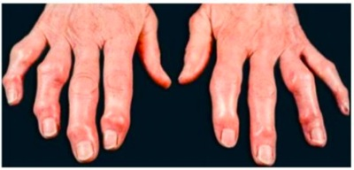
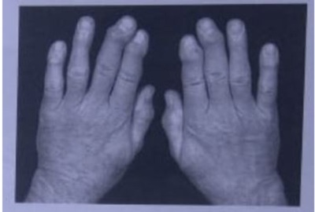
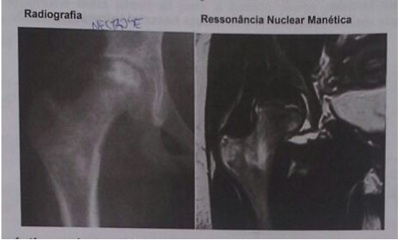

Questão 1 · Quadro clínico · Osteoartrite OA · Exames complementares · 4000123520Paciente feminina, de 68 anos, veio à consulta por dor articular nos dedos das mãos há 6 meses, associada à rigidez matinal de 20 minutos nas mesmas articulações. Referiu que a mãe tinha um ""reumatismo"" nas mãos. Negou história familiar de outras doenças. A paciente trouxe os resultados de alguns exames: velocidade de hemossedimentação de 32 mm e fator reumatoide de 18 UI (valor de referência: até 14 UI). Ao exame físico, foi constatado aumento de volume nas articulações interfalangianas proximais e distais simetricamente. O diagnóstico mais provável é
A artrite reumatoide.
B artrite psoriásica.
C artrite pós-viral.
D polimialgia reumática.
E osteoartrite.
Questão 2 · Tratamento · Osteoartrite OA · Farmacológico · 4000106884Qual a droga de primeira escolha para osteoartrite?
A Paracetamol.
B Hidroxicoroquina.
C Naproxeno.
D Meladone.
Questão 3 · Epidemiologia · Reumatologia · Tratamento · 4000075590Uma paciente de 72 anos queixa-se em consulta ambulatorial de dor nas mãos de início há 2 anos, com rigidez matinal de aproximadamente 20 minutos. Refere que a dor é predominantemente em dedos, nega dor em punhos e que piora quando trabalha muito. Abaixo está uma foto do exame físico da paciente. Qual o provável diagnóstico da paciente?

A Osteoartrite
B Artrite Reumatoide
C Artrite Psoriasica
D Espondilite anquilosante
E Artrite gotosa
Questão 4 · Policondrite recidivante · 4000074954Homem, branco, quarta década, refere vertigem acompanhada de perda auditiva, artrite assimétrica de pequenas, médias e grandes articulações com resolução espontânea; orelha eritematosa, edemaciada e hipersensível poupando seu lóbulo. Evoluiu com rinorreia, obstrução nasal, epistaxe, deformidade do nariz em sela e dispneia por traqueomalácia, com colapso traqueal. A hipótese diagnóstica mais provável é:
A policondrite recidivante
B leishmaniose
C granulomatose com poliangeite
D granulomatose eosinofílica com poliangeite
Questão 5 · Quadro clínico · Osteoartrite OA · Exames complementares · 4000040897São achados característicos da Osteoartrite, EXCETO:
A Fator Reumatoide positivo
B Esclerose subcondral
C Rigidez matinal
D Nódulos de Heberden
Questão 6 · Tratamento · Não f armacológico · Osteoartrite OA · 4000039910Mulher, 52 anos, empregada doméstica. Refere dor em joelho direito e nas articulações das mãos. Relata rigidez matinal em torno de 20minutos. Refere que as dores pioravam com o frio e com o esforço físico e melhoravam com o repouso. Atualmente vem fazendo uso de diclofenaco com melhora; contudo, refere epigastralgia. Ao exame articularnotam-se nas mãos nódulos de Heberden e Bouchard e no joelho há crepitação. No momento, nenhuma articulação com sinal de sinovite. Qual a conduta mais adequada para o tratamento paciente?
A Manter diclofenaco e associar com IBP.
B Prescrever analgesia simples e fisioterapia.
C Iniciar Metotrexato associado a ácido fólico.
D Iniciar corticoide em dose imunossupressora.
Questão 7 · Tratamento · Quadro clínico · Osteoartrite OA · 4000033346A Osteoartrite (OA), também conhecida como Osteoartrose, representa uma falência articular com perda da cartilagem hialina, com alta prevalência em idosos e alta taxa de incapacitação. Sobre esta patologia, analise as a rmativas a seguir e marque a opção correta. I. O paracetamol é a droga de escolha inicial para controle da dor. II. Rigidez matinal maior que 1 hora e nódulos subcutâneos são critérios diagnósticos. III. Nos quadros de OA grave das mãos surgem nódulos de Heberden nas articulações interfalangianas distais e nódulos de Bouchard nas interfalangianas proximais. IV. Aplicações de glicocorticoides intra-articulares são alternativas para alguns pacientes, sendo e cazes em reduzir a dor, pelo menos temporariamente.
A Estão corretas apenas as afirmativas I e III.
B Estão corretas apenas as afirmativas I, III e IV.
C Estão corretas apenas as afirmativas III e IV.
D Estão corretas apenas as afirmativas II e IV.
E Todas as afirmativas estão corretas.
Questão 8 · Quadro clínico · Osteoartrite OA · 4000022762Mulher de 61 anos, apresenta dor e limitação de movimento em articulações interfalangeanas distais das mãos, de forma progressiva, há cerca de quatro anos. Refere ainda, nodulações nos dedos, mais proeminentes no 3º dedo da mão, bilateralmente. História de artralgia no joelho esquerdo, sem sintomas sistêmicos, comorbidades ou traumas articulares. Considerando a imagem, o diagnóstico mais provável é:

A artrite psoriásica.
B artrite reativa.
C artrite reumatoide.
D gota tofácea crônica.
E osteoartrite primária.
Questão 9 · Epidemiologia · Quadro clínico · Osteoartrite OA · 4000125567Paciente feminina, 60 anos, apresenta quadro de dor em mãos, bilateral. Refere que acorda com sensação de dor, rigidez e parestesias e que melhora rapidamente. Consegue fazer suas atividades diárias com di culdades, por causa de dor em mãos. Ao exame: Presença de nódulos de Herberden, Bouchard. Sem artrites em mãos. Geno valgo bilateral com crepitações femuro patelar palpáveis. Sobre o caso, marque a alternativa CORRETA.
A Trata-se de Artrite Reumatóide e o exame Anti CCP deve estar positivo.
B Trata-se de Osteoartrite nodal e o exame Fator Reumatóide deve estar positivo.
C Trata-se de Artrite Reumatóide e o raio X de mãos deve mostrar destruição de espaço articular em articulações metacarpofalangeanas e rádio cárpica.
D Trata-se de Osteoartrite nodal e o raio X deve mostrar destruição de espaço articular em interfalangeanas distais.
E Trata-se de Artrite Reumatóide e o exame Fator Reumatóide deve estar positivo.
Questão 10 · Tratamento · Não f armacológico · Osteoartrite OA · 4000107893Homem, 62 anos, refere dor em joelho direito após deambulação, há dois anos. Há quatro meses com piora da dor, tornando-se incapacitante. Etilista de 1,2 litro de cerveja por dia. Em uso de enalapril 5 mg 12/12 horas, hidroclorotiazida de 25 mg/dia e alopurinol 200 mg/dia. Exame físico: bom estado geral; IMC: 32,2 Kg/m²; varismo de joelhos; edema e calor em joelho direito, com restrição para extensão completa e presença de cisto poplíteo. Qual é a melhor conduta para a dor no joelho?
A Aumentar dose de alopurinol.
B Atingir IMC abaixo de 25 kg/m².
C Remoção cirúrgica do cisto poplíteo.
D Associar colchicina.
Questão 11 · Epidemiologia · Quadro clínico · Fatores de risco · 4000085854Assinale a assertiva correta sobre osteoartrite.
A Ombro é a articulação mais frequentemente acometida na osteoartrite primária.
B Dor articular está diretamente associada à perda de cartilagem à radiografia.
C Presença de derrame articular e de rigidez matinal de poucos minutos exclui o diagnóstico.
D História familiar positiva não é fator de risco para seu surgimento.
E Atrofia muscular está associada a maior incidência de osteoartrite de joelho.
Questão 12 · Quadro clínico · Osteoartrite OA · 4000083586Quais articulações estão tipicamente poupadas na osteoartrite?
A Tornozelo;
B Coluna cervical;
C Articulação interfalângica distal;
D Quadril;
E Joelho;
Questão 13 · Quadro clínico · Osteoartrite OA · 4000015924Mulher de 55 anos se queixa de dor no joelho direito ao subir e descer as escadas da sua casa, principalmente no nal do dia. O sintoma que ocorreu há 1 ano, tem se tornado mais intenso e frequente e a faz evitar escadarias. Relata di culdade ao iniciar movimentos após períodos de inatividade que melhora à medida que insiste no movimento. Nega calor, rubor ou edema nessa articulação ou outras quaisquer. Ao exame físico, há crepitações e limitação dos movimentos ativos e passivos no joelho direito, além de derrame articular (sinal da tecla presente). Em relação a essa doença, assinale a alternativa CORRETA:
A Os joelhos, os cotovelos, os punhos, os ombros e os tornozelos são as articulações mais acometidas.
B A doença não cursa com rigidez matinal nas articulações acometidas.
C A instabilidade nos movimentos articulares por causa de atrofia muscular pode ocorrer.
D Os sintomas e os achados radiográficos guardam correlação clínico-radiológica.
Questão 14 · Quadro clínico · Osteoartrite OA · 4000003111Os nódulos de Heberden são características de:
A Artopatia de Jaccoud
B Artrite psoriásica
C Osteoartrite
D Osteoartropatia hipertrófica
Questão 15 · Quadro clínico · Osteoartrite OA · 4000124508Paciente feminina, de 65 anos, consultou na unidade básica de saúde por dor nos dedos das mãos, quadro iniciado há pelo menos 10 meses, e rigidez matinal que melhorava após realizar movimentos de abrir e fechar as mãos por cerca de 5 minutos. Nos últimos 2 anos, vinha percebendo que as articulações dos dedos estavam mais volumosas. Ao exame físico, apresentava nodulações endurecidas nas articulações interfalangianas proximais e distais. Qual a hipótese diagnóstica mais provável?
A Artrite reumatoide.
B Artrite psoriásica.
C Artrite gotosa crônica.
D Pseudogota.
E Osteoartrite.
Questão 16 · Diagnóstico dif erencial das artropatias · 4000100878As articulações interfalangeanas distais dos dedos das mãos estão comprometidas em quais afecções?
A Artrite reumatoide e espondilite anquilosante.
B Lúpus eritematoso sistêmico e polimiosite.
C Osteoartrite e artrite psoriásica.
D Artrite idiopática juvenil e doença de Still do adulto.
Questão 17 · Artropatias inf lamatórias · Diagnóstico dif erencial das artropatias · 4000047070Mulher, 50 anos, diabética, queixa de dor nos joelhos há 3 anos. Inicialmente a dor era insidiosa e aliviava com o repouso, agora persistente e refratária aos analgésicos, com rigidez matinal de 20 minutos e rigidez articular fugaz após curtos períodos de repouso. Instabilidade do joelho especialmente ao descer escadas. No exame com crepitação nos joelhos e sinais de derrame articular. Radiogra a mostra proliferação das margens ósseas, diminuição do espaço articular e esclerose óssea subcondral. Sobre o caso, assinale a alternativa CORRETA em relação ao diagnóstico e tratamento, respectivamente:
A Osteoartrite, exercícios aeróbicos e contra resistência.
B Osteoartrite, corticoides sistêmicos.
C Artrite reumatoide, imunomoduladores.
D Artrite reumatoide, anti-inflamatórios não esteroides.
E Gota, alopurinol e colchicina.
Questão 18 · Quadro clínico · Osteoartrite OA · 4000119246Mulher de 65 anos, queixa-se de dor em articulações interfalangianas proximais e distais, acompanhada de rigidez matinal de 20 minutos. Exame articular das mãos: aumento do volume da segunda e quinta Interfalangiana (IF) distal bilateral. Palpação: ausência de aumento da temperatura, presença de nódulos de consistência óssea e dor à palpação da articulação IF proximal e distal. Movimentação: diminuição da exão e extensão de segundo e quinto dedos bilateralmente. A principal hipótese é:
A Artrite reumatoide.
B Artrite paraneoplásica.
C Osteoartrite.
D Esclerose lateral amiotrófica.
Questão 19 · Quadro clínico · Osteoartrite OA · Exames complementares · 4000110808Mulher de 60 anos, com dor nas articulações interfalangeanas distais e proximais, bilateralmente, há 3 anos, de caráter progressivo. A dor piora com o uso das articulações. Ao exame físico observa-se presença de nódulos de consistência óssea nas articulações interfalangeanas distais. O exame radiológico das mãos mostra estreitamento dos espaços interarticulares, osteoesclerose subcondral, cistos subcondrais e osteófitos marginais.
A artopatia soro-negativa.
B artrite reumatoide.
C lupus eritematoso sistêmico.
D artrite gotosa.
E osteoartrose idiopática.
Questão 20 · Quadro clínico · Osteoartrite OA · 4000093280Entre as articulações abaixo mencionadas, a mais frequentemente acometida na osteoartrite primária é a:
A Tibiotalar.
B Radiocárpica.
C Glenoumeral.
D Primeira carpometacarpeana.
E Segunda metacarpofalangeana.
Questão 21 · Diagnóstico · Hiperostose esquelética idiopática dif usa DISH · 4000093054Homem, 68 anos, diabético, apresenta dorsolombalgia mecânica, dor em face lateral dos quadris e calcaneodinia posterior há 6 meses. Os respectivos rediogramas evidenciam osteó tos anteriores grosseiros de T10 a L3, esporões trocantéricos e posteriores de calcâneos. A eritrossedimentação é de 35 mm na primeira hora. O provável diagnóstico é:
A Doença por deposição de urato.
B Hiperostose idiopática difusa.
C Espondilite anquilosante.
D Polimialgia reumática.
E Artrite soronegativa.
Questão 22 · Epidemiologia · Tratamento · Quadro clínico · 4000052008A osteoartrite, antes denominada osteoartrose, artrose, doença articular degenerativa, entre outras, é a doença articular mais prevalente. Em relação à osteoartrite, assinale a alternativa CORRETA:
A A destruição cartilaginosa, com diminuição da sua espessura, traduz-se radiograficamente como esclerose subcondral.
B Anti-inflamatórios não hormonais não devem ser utilizados no tratamento da osteoartrite, pois não há evidência de sua eficácia.
C Até os 50 anos de idade, a osteoartrite de quadris é mais prevalente no sexo feminino.
D Dor, rigidez pós-repouso menor que 30 minutos, parestesias e derrame articular são sinais ou sintomas da osteoartrite.
E Nódulos de Heberden são nódulos articulares ósseos localizados nas interfalangianas proximais.
Questão 23 · Tratamento · Quadro clínico · Osteoartrite OA · 4000039426Em relação à osteoartrose de joelhos, assinale a alternativa CORRETA:
A Fortalecimento muscular associado a alongamento são medidas que devem ser implantadas desde o início do diagnóstico.
B Nos períodos de piora de dor articular devemos orientar repouso total da articulação acometida.
C O uso de anti-inflamatórios não esteroidais em altas doses em curtos períodos de tempo podem levar à melhora prolongada destes pacientes.
D O uso de antiartrósicos como a diacereína associado a analgésicos simples como paracetamol não costuma trazer benefícios em relação à dor destes pacientes.
Questão 24 · Tratamento · Não f armacológico · Osteoartrite OA · 4000037820Quanto ao tratamento da osteoartrite nos Idosos é INCORRETO afirmar que:
A Uma das principais medidas a serem aplicadas para o tratamento da osteoartrite em articulações de carga como joelhos é o controle da obesidade.
B Os exercícios para ganho de massa muscular, estabilização da articulação e manutenção da amplitude de movimento seja por técnica de fisioterapia ou hidroterapia são peças chaves no tratamento não farmacológico.
C A analgesia deve ser realizada dando preferência a medicações com menor potencial iatrogênico como analgésicos simples.
D Em caso de necessidade de uso de AINES não há necessidade de uso de protetor gástrico ou mesmo realização periódica de exames de função renal e enzimas hepáticas.
Questão 25 · Quadro clínico · Osteoartrite OA · 4000037552A osteoartose é a causa de dor crônica mais comum no idoso. Predomina no sexo feminino e pode afetar praticamente todas as articulações do corpo. Quais as articulações mais afetadas por esta doença?
A Joelhos, mãos e vértebras.
B Joelho, ombro e cotovelo.
C Ombro, mãos e vértebras.
D Artelhos, mãos e vértebras.
Questão 26 · Tratamento · Osteoartrite OA · Farmacológico · 4000107368Qual o medicamento inicial para o tratamento de artrose?
A Paracetamol.
B Prednisona.
C Metotrexate.
D Derivado opioide.
Questão 27 · Quadro clínico · Osteoartrite OA · 4000085867Assinale o mapa de envolvimento articular clássico para um paciente com osteoartrite de mãos:
A Interfalangianas proximais, distais e metacarpofalangianas.
B Interfalangianas distais, primeira carpometacarpiana e punhos.
C Interfalangianas proximais, interfalangianas distais e punhos.
D Interfalangianas proximais, primeira carpometacarpiana e punho.
E Interfalangianas proximais, interfalangianas distais e primeira carpometacarpiana.
Questão 28 · Quadro clínico · Osteoartrite OA · 4000064440A Osteoartrite (OA) tem sido considerada uma condição degenerativa da articulação, consequência quase inevitável do envelhecimento. Com relação à osteoartrite é correto afirmar:
A Algumas formas de osteoartrite estão fortemente vinculadas à transmissão genética como a osteoartrite cervical e a osteoartrite acrômio-clavicular.
B A rizartrose engloba o envolvimento do semilunar com o primeiro metacarpal e em menor frequência do semilunar com o escafoide.
C O alargamento de consistência rígida nas articulações interfalangianas distais e próximas são denominados nódulos de Bouchard e Heberden respectivamente.
D O quadril é uma articulação frequentemente acometida pela osteoartrite sendo mais frequentes em mulheres com envolvimento unilateral.
E Na mulher a osteoartrite inicia basicamente após os 40 anos e sua incidência aumenta significativamente após a menopausa.
Questão 29 · Tratamento · Quadro clínico · Osteoartrite OA · 4000055592Num paciente de 67 anos com quadro de dor articular atingindo principalmente articulações interfalangeanas distais, iniciada há alguns anos e que vem piorando. Refere melhora do quadro com repouso. Qual a alternativa correta?
A O quadro sugere polimialgia reumática.
B Corticosteróides são o tratamento de escolha.
C O quadro sugere gota.
D O quadro sugere artrite reumatoide.
E O quadro sugere doença degenerativa articular (osteoartrite).
Questão 30 · Tratamento · Não f armacológico · Osteoartrite OA · 4000029772Homem de 58 anos com diagnóstico de osteoartrite de joelhos por critérios clínicos e radiográ cos e IMC de 33 kg/m². Nesse caso, qual a melhor medida terapêutica a longo prazo?
A AINES COX-2 seletivos.
B Injeções intra-articulares de corticoesteroide.
C Sulfato de glicosamina e condroitina.
D Perda de peso significativa.
Revisar: possível letra faltando em enunciado
Questão 31 · Reumatologia · Tratamento · Quadro clínico · 4000009436Sobre o tratamento da osteoartrose do joelho, assinale a alternativa correta:
A perda de peso, ganho de movimento e analgesia são os únicos fatores não-cirúrgicos que impactam positivamente a doença
B a artroscopia e o desbridamento da articulação são procedimentos que cientificamente apresentam bons resultados a longo prazo
C a presença de deficiências no alinhamento e instabilidades do joelho não modifica a técnica e o tipo de implante escolhido
D a utilização de medicações orais com metabólitos do colágeno demonstrou regeneração da cartilagem a curto prazo
E o sucesso da artroplastia total do joelho permitiu a indicação desse procedimento para todos os pacientes com diagnóstico de osteoartrose
Questão 32 · Quadro clínico · Osteoartrite OA · 4000115981Qual das seguintes articulações é tipicamente poupada na osteoartrite?
A Coluna cervical.
B Tornozelo.
C Articulação interfalangeana distal.
D Quadril.
Questão 33 · Fatores de risco · Osteoartrite OA · 4000113048Sobre um fator de risco para o desenvolvimento da osteoartrite, assinale a alternativa incorreta.
A Acromegalia
B Osteoporose
C Pseudogota
D Diabetes mellitus
E Gota
Questão 34 · Exames complementares · Quadro clínico · Etiopatogenia · 4000106766Mulher, 46 anos, portadora de lúpus eritematoso sistêmico há 15 anos, com repetidas reativações. Há dois anos em uso de azatioprina, com remissão parcial da atividade da doença. Quando apresenta dores articulares, faz uso de prednisona 20 a 40 mg ao dia, com melhora, Há dez meses, apresenta dor persistente em região inguinal direita, que piora ao caminhar, sem melhora com uso de corticosteroides. Antecedentes: HAS. Ao exame: Peso: 92 kg, eritema malar, alopecia leve, presença de giba e acne em face e tronco. PA 150 x 80 mmHg, FC: 90 bpm. Dor e limitação à rotação de coxa direita. Qual é o diagnóstico mais provável?

A osteoartrose.
B artrite lúpica.
C necrose avascular.
D artrite séptica.
Questão 35 · Etiopatogenia · Osteonecrose · 4000104948Entre as opções abaixo, assinale a alternativa que contempla as causas mais frequentes de osteonecrose no adulto:
A dislipidemia, diabete ínsipido.
B doença de Behçet, infecção por HIV.
C hemodiálise, anemia megaloblástica.
D esclerose múltipla, condições disbáricas.
E alcoolismo, corticoterapia prolongada. ida oib pr ed
Questão 36 · Quadro clínico · Osteoartrite OA · 4000104894Quais são as articulações tipicamente acometidas na artrose primária generalizada?
A Metacarpofalangianas, mediotársicas e coluna lombar.
B Interfalangianas distais de mãos, joelhos e coluna cervical.
C Primeiras metatarsofalangianas, esternocondrais e quadris.
D Interfalangianas proximais de mãos, glenoumerais e tibiotársicas.
E Interfalangianas proximais de pés, radiocárpicas e sacroilíacas.
Questão 37 · Diagnóstico · Quadro clínico · Tratamento · 4000074849Uma paciente de 41 anos se apresenta a um consultório oftalmológico com queixa de olho vermelho há duas semanas. Ao exame nota-se também edema auricular violáceo doloroso, dor na topogra a do esterno e dispneia aos leves esforços. Ao teste da fenilefrina o olho mantém-se vermelho. Qual a conduta inicial para o quadro sistêmico?
A AINEs.
B Corticoesteroides tópicos.
C Corticoterapia oral em dose imunossupressora.
D Pulsoterapia com ciclofosfamida.
Questão 38 · Policondrite recidivante · 4000074842Uma paciente de 41 anos se apresenta a um consultório oftalmológico com queixa de olho vermelho há duas semanas. Ao exame, nota-se também edema auricular violáceo doloroso, dor na topogra a do esterno e dispneia aos leves esforços. Ao teste da fenilefrina o olho mantém-se vermelho. Qual a principal hipótese diagnóstica?
A Artrite reumatoide.
B Policondrite recidivante.
C Granulomatose de Wegener.
D Esclerodermia.
Questão 39 · Diagnóstico · Policondrite recidivante · 4000009111Paciente de 45 anos, sexo masculino, procura ambulatório de clínica médica com queixa de deformação de orelhas e nariz. Refere vários episódios de in amação dessas mesmas regiões, geralmente acompanhados de rouquidão e dores articulares difusas. Ao exame, apresenta nariz com deformação em sela e pavilhões auriculares com deformações nodulares que poupam os lobos. Qual é o diagnóstico mais provável? Respostas: 1 12 23 34
A Hanseníase
B Artrite reumatoide.
C Policondrite recidivante.
D Gota tofácea.
E Amiloidose.